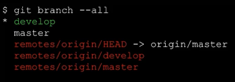

Configura un directorio para que sea monitorizado por Git. Para ello, configura el directorio de trabajo,
compuesto por los ficheros del proyecto, el índice o staging area y un repositorio local donde se almacenarán los commits.
En relación a esto, en git existen varias localizaciones a diferenciar en un proyecto:
Directorio de trabajo (o árbol de trabajo): Es el conjunto de ficheros que forman el proyecto en un
determinado momento de la historia del mismo, los cuales se han extraído del repositorio y están listos para utilizarse a conveniencia.
Índice (staging area): Representa la zona donde se ubican los ficheros modificados del proyecto,
que serán incluidos en el siguiente commit (fotografía del proyecto).
Repositorio (.git): Se trata del lugar en el que git almacena en modo de base de datos,
toda la información (metadata) del proyecto así como su evolución, albergando todas las ramas y los commits que forman la historia del proyecto.
GIT ADD
Añade ficheros untracked y modificados al índice (staging area). Conviene saber que en git,
un fichero que forma parte del proyecto puede estar en los siguientes estados:
untracked: No se encuentra monitorizado.
unmodified: Se encuentra monitorizado pero no ha sido modificado.
modified: Es un fichero monitorizado y modificado.
staged: El fichero se encuentra listo para ser incluido en el próximo commit.
GIT COMMIT
Realiza una nueva "fotografía" del proyecto en su estado actual. De esta manera, se crea un nuevo commit en la historia del proyecto.
git commit -m "descripción"
GIT BRANCH
Permite manejar y gestionar las ramas existentes en el repositorio.
git branch --all Muestra las distintas ramas existentes en el proyecto, locales y remotas. La rama actual local,
la que se encuentra seleccionada (checked out) se muestra con un asterisco *.
La rama remota por defecto, se indica mediante la referencia HEAD. En el caso siguiente,
se trataría de origin/master, con lo que nos podemos referir a ella en los comandos como simplemente origin:

De esta manera, si necesitásemos por ejemplo subir cambios a la rama remota develop del ejemplo
anterior de manera constante, podríamos definir que el remoto por defecto fuese origin/develop,
y así ahorrar trabajo a la hora de escribir los comandos. Se utilizaría el comando:
git remote set-head origin develop
git branch permite crear una branch label en el commit actual, es decir, permite crear una
nueva rama.
git branch -d permite eliminar una etiqueta de rama o branch label (no elimina commits).
Normalmente es utilizado este comando tras haber realizado un merge de la rama a eliminar en la
rama principal. Si lo aplicamos a una rama antes de hacer un mege, git nos lo impedirá,
indicando que utilicemos -D para realizarlo verdaderamente. Una vez hecho, los commits asociados a
la rama eliminada quedarán huérfanos, entendiéndose que deseamos desechar el trabajo realizado.
Si finalmente fue un error, es posible deshacer la borrado de la rama mediante git reflog, donde
podremos consultar el id o sha-1 del último commit de la rama eliminada y así ejectuar
git checkout -b para restablecer la situación inicial.
GIT TAG
Permite gestinar las diferentes etiquetas ubicadas en los distintos commits
git tag permite visualizar las tags de tipo "annotated " existentes en el repositorio.
git tag -a [-m | -F ] [] permite crear una annotated tag en el
commit indicado. Si no se especifica commit se utilizará el que apunte HEAD.
git tag -d permite eliminar la tag indicada.
Estudiar, Analizar, Aprender